Zennの「ChatGPT」のフィード
フィード

誰もやってないベンチマークとAPI非依存におけるアプリ内アストラの挙動報告
Zennの「ChatGPT」のフィード
こんにちは、黒パグです🐾新しいモデルが来ると、私はだいたい同じことをやります。まず名乗ってもらう。質問の文字を少し壊す。知らないことを聞く。そして、いつもの無茶振りを投げる。幼稚園児にわかる極座標ラプラシアンの導出 Python使用可今回は正直、ビビりました。私の黒パグベンチマークでは、これまでで最も高く評価した回答です。ただ、その評価に至るまでの操作記録を読むと、回答の出来だけでは片付かないものも出てきます。自己紹介の揺れ、試験への言及、見えなくなった使用量、検証ツールの起動失敗。今日はそのあたりまで、アプリから見えた範囲で報告します。タイトルの「誰もやってない」は、この妙な...
12時間前
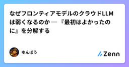
なぜフロンティアモデルのクラウドLLMは弱くなるのか ─ 『最初はよかったのに』を分解する
Zennの「ChatGPT」のフィード
はじめに「Claude Codeで使っていたモデルは最初はよかったが、最近はいまいちになった」と感じることがある。代わりに、クラウドで提供されるフロンティアLLMについて、この感覚を生む仮説を 確認できる事実、あり得るが外部からは確定できないこと、誤解されがちなこと に分ける。結論を先に言えば、同じ「モデル名」でも、実際に回答へ効く要素は重なっている。!本稿の結論「利用者が増えたから、同じ重みのモデルそのものが弱くなった」と示す公開証拠はない。一方で、利用上限による別モデルへの切替、モデル／システムプロンプト／安全策の更新、長く汚れた会話コンテキスト、要約・RAG・ツールの...
16時間前
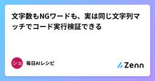
文字数もNGワードも、実は同じ文字列マッチでコード実行検証できる
Zennの「ChatGPT」のフィード
TL;DR「150字以内」「特定の紋切り型表現を使わない」「謝罪は1回だけ」という3種類の制約を持つメール文面を、コード実行機能を使って1回のプロンプトでまとめて検証できるか試した文字数のような hard constraint（数え上げで白黒つく制約）だけでなく、禁止語の有無や特定語の出現回数のような一見 soft に見える制約も、判定材料を具体的な文字列に落とし込めば同じ文字列マッチ処理としてコードで検証できた一方で、禁止語リストに入れていない類義表現（パラフレーズ）はすり抜けた。これは文字列マッチの原理的な限界であり、意味理解を伴う真の soft constraint と...
18時間前
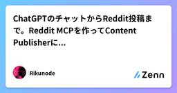
ChatGPTのチャットからReddit投稿まで。Reddit MCPを作ってContent Publisherに統合した
Zennの「ChatGPT」のフィード
Reddit投稿を普通のChatGPTから扱えるようにするため、最初はReddit専用MCPとして実装していた。動くところまでは行った。テキスト投稿、1〜4枚の画像投稿、live preview、承認、publish、read-back、再試行時の重複防止まで通せた。ただ、すでにQiita・Zenn・noteを扱うContent Publisher MCPがある。投稿先ごとにMCPを増やしていくより、ChatGPTから見える入口は1つにまとめた方が運用しやすい。そこでRedditをContent Publisherへ統合した。 最終構成今はこうなっている。ChatGPT ...
1日前
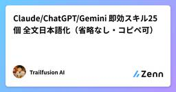
Claude/ChatGPT/Gemini 即効スキル25個 全文日本語化（省略なし・コピペ可）
Zennの「ChatGPT」のフィード
Claude の Skills、ChatGPT の Custom GPT、Gemini の Gem — どれも本質は「役割と制約を明文化した .md」を読み込ませることです。本記事では、英語圏で配布されている実用スキル25個を 一切省略せず・そのままコピペで使える形 で全文日本語化してまとめました。元ネタは Nico (@nicos_ai) による配布パック。各スキルの本文は ```markdown コードブロックでラップしてあるので、ブロック右上のコピーボタンでそのまま .md ファイルや System Prompt に貼り付けられます。 使い方（共通）Claude Cod...
1日前
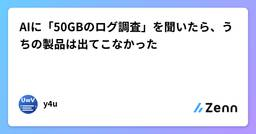
AIに「50GBのログ調査」を聞いたら、うちの製品は出てこなかった
Zennの「ChatGPT」のフィード
巨大テキストビューア UwView / UwView Pro を個人開発しています。ふと思い立って、4つのAIに同じ質問をぶつけてみました。結果は タイトルのとおりです。ただ、その後に試したもう一つの実験で、予想していなかったことが起きたので、検証込みで書き残します。 質問（全AI共通・新規会話で1回だけ）本番サーバーから50GBのアプリケーションログ（生テキスト・1ファイル）を渡されました。障害の原因調査を今日中にやる必要があります。どのツールと手順を使うべきですか？ 具体的なツール名で教えてください。環境は手元のPC（メモリ32GB、ログを外部サービスにアップロードすることは...
1日前
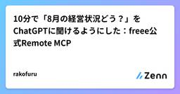
10分で「8月の経営状況どう？」をChatGPTに聞けるようにした：freee公式Remote MCP
Zennの「ChatGPT」のフィード
はじめに「8月の経営状況どう？」これだけで、ChatGPTがfreeeの月次損益を読みに行くようにした。私の環境では、freee公式Remote MCPの追加からChatGPT Projectの設定、公式資料の登録、読み取り専用の接続確認まで10分だった。独自コードは0行。ただし、Remote MCPをつないだだけでは終わらなかった。!この記事でいう「読み取り専用」は、Project指示、使用ツールの制限、各依頼のプロンプトによる運用上の制限です。MCP側から書き込みツールを消した、OS権限のような強制的なセキュリティ境界ではありません。 この記事の結論今回作...
1日前
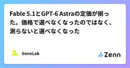
Fable 5.1とGPT-6 Astraの定価が揃った。価格で選べなくなったのではなく、測らないと選べなくなった
Zennの「ChatGPT」のフィード
TL;DR2026-09-01 の Claude Fable 5.1 と 09-03 の GPT-6 Astra は、API定価が $10 / $50（入力 / 出力、100万トークンあたり）で完全一致請求を分けるのは定価ではなく3つの数字。出力比率、キャッシュヒット率、そして同じ文章を両社が何対何のトークンに数えるかの比 r出力比率 10% 以上なら Astra。出力比率 3% 以下でヒット率 90% 超のエージェントなら、r が 1.2 以下のとき Fable。1リクエスト 272K 超なら問答無用で Fabler は未公表。Anthropic 自身が新トークナイザは...
1日前
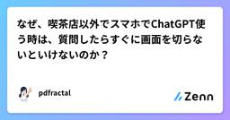
なぜ、喫茶店以外でスマホでChatGPT使う時は、質問したらすぐに画面を切らないといけないのか？
Zennの「ChatGPT」のフィード
はじめにスマートフォンでChatGPTを使っていると、見た目からは想像できないほどバッテリーが減ることがあります。特に5G回線でThinking系モデルに重い質問を投げ、長い回答が少しずつ表示されていくのを画面を点けたまま眺めていると、普通のWeb閲覧より明らかに電池の減りが速くなり、ときにはカメラを起動し続けている場合より激しく消費しているように感じることさえあります。しかし、これはChatGPTがスマートフォン内部で巨大な人工知能を動かしているからではありません。推論そのものは基本的にサーバー側で行われており、スマートフォン側で問題になるのは、回答を受け取り続ける際の通信パター...
2日前
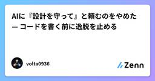
AIに『設計を守って』と頼むのをやめた — コードを書く前に逸脱を止める
Zennの「ChatGPT」のフィード
AIに「設計を守って」と頼むのをやめました。守ってくれないから、ではありません。むしろ最近のAIは、かなり上手にコードを書きます。こちらの要求を理解して、既存コードを読み、テストまで通して、もっともらしい理由を添えて変更してくる。だから厄介なのです。AIは、正しいコードを書きながら設計を壊せる。テストは通る。要求も満たしている。その関数だけ見れば綺麗に書けている。それでも、最初は一方向だった依存が少しだけ逆流する。ひとつしかなかった入口が、気づけば二つになる。「ここからは触らない」と決めていた境界を、«今回はこちらのほうが合理的です»という、まったく正しそう...
2日前
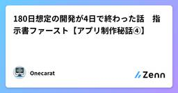
180日想定の開発が4日で終わった話 指示書ファースト【アプリ制作秘話④】
Zennの「ChatGPT」のフィード
はじめに前回の記事は、アプリを公開しようとしたところで始まった話でした。今回はその一つ前、そもそもアプリがどうやって出来たのか、の話です。https://zenn.dev/onecarat_tech/articles/93275d9da3e0ceOnecaratEditor の構想自体は以前からありました。ただ「作るか」と決めてから、まだ機能の半分も盛れていないひな形が動くまで、当初は半年（約180日）を見込んでいたんです。技術が Java 6 で止まっている運用おじさんの見積もりとしては、むしろ控えめなつもりでした。それが4日で形になりました。先に言っておくと、難しい技...
2日前
Slackから使えるAIエージェント、ChatGPT Workspace AgentsとClaude Tagを比較してみた
Zennの「ChatGPT」のフィード
以前、Slackから手軽にエージェントを使うためのClaude Tagを試した記事を書きました。https://zenn.dev/axelspace/articles/241086a53f8c67ChatGPTのWorkspace Agentsでも同じようなことができるようになっていたので、実際に使って両者を比較してみます。!本記事は2026年8月時点のResearch Preview版を試した感想です。提供プランや機能、利用上限は今後変わる可能性があります。 ChatGPT Workspace AgentsとはWorkspace Agentsは、チームで共有できるCha...
2日前
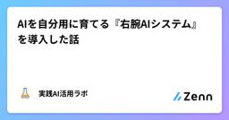
AIを自分用に育てる『右腕AIシステム』を導入した話
Zennの「ChatGPT」のフィード
AIを、もっと効率よく、自分に合う形で使えないか。そんな方法を探していた7月ごろ、YouTubeのおすすめにLeo Tohyamaさんの動画が出てきました。もともと好きで、ちょこちょこ動画を視聴していたYouTuberさんです。その動画で初めて知ったのが、「右腕AIシステム」でした。ここでいう右腕AIは、AIをその都度質問に答えるだけの道具として使うのではなく、自分のことを反映させ、自分用に育てていく仕組みです。特に、自分の秘書のようにAIを使い、育てていくという点が印象に残りました。 それまでは、AIのメモリに任せていた動画を見る前から、AIの中にいくつかプロジェクトを作っ...
2日前
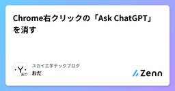
Chrome右クリックの「Ask ChatGPT」を消す
Zennの「ChatGPT」のフィード
ChatGPT公式Chrome拡張を入れると、右クリックメニューに 「Ask ChatGPT」 が追加される。しかも「日本語に翻訳」のすぐ下。間違えて押しちゃって普通に邪魔。消す手順は以下。chrome://extensions/ を開くChatGPT 拡張の「詳細」を開く「ビューを検証」の Service Worker をクリックDevToolsの Console を開く貼り付け警告が出たら、以下を手入力してEnterallow pastingこれを実行chrome.contextMenus.removeAll()これでChatGPT拡張が追加した右...
3日前
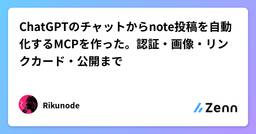
ChatGPTのチャットからnote投稿を自動化するMCPを作った。認証・画像・リンクカード・公開まで
Zennの「ChatGPT」のフィード
普通のChatGPTのチャットから、そのままnoteの記事作成・画像挿入・公開まで進めたくて、Content Publisher MCPにnoteアダプターを追加した。最初からnote向けの処理を全部自作したわけではない。note-mcp-communityやdrillan/note-mcpの実装をかなり参考にして、認証や内部APIの使い方は既存の知見に寄せた。この記事では、最終的に動いた構成だけでなく、実運用までに踏んだ失敗も含めて残す。注意: この記事で扱うnote連携はnote.comの非公式な内部APIを利用している。内部APIは変更される可能性がある。Cookieやセッ...
3日前
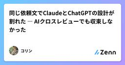
同じ依頼文でClaudeとChatGPTの設計が割れた ― AIクロスレビューでも収束しなかった
Zennの「ChatGPT」のフィード
GitHub Copilot無料枠の使い心地に感動しつつ、無料クレジット枠に気を取られながら使っていましたが、それでも1週間も経たずにクレジットオーバーになってしまう勢いだったため、他のAIの無料枠のコーディングにも興味を持ちました。ネットを検索するとAIコーディングにはClaudeとの印象を持ってしまったのですが、実際に自分の使い方ではどうなのか、自分の目で3AIを実際に確認してみたくなりました。（参考記事[1]）なお、コーディング以外で最近常用しているAIはGemini。ChatGPTは昔はよく使っていたのですが、回答量の多さに昨今引き気味。Claudeは翻訳系作業補助で利用して...
3日前
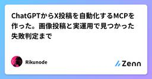
ChatGPTからX投稿を自動化するMCPを作った。画像投稿と実運用で見つかった失敗判定まで
Zennの「ChatGPT」のフィード
ChatGPTからXへそのまま投稿できるようにしたくて、XActionsを土台に小さなMCPを作りました。最初はテキストを投稿できれば十分だと思っていました。ところが実際に使い始めると、画像の受け渡し、XへのMedia Upload、投稿前の承認、文字数判定、成功判定と、投稿ボタンを押すまでの周辺処理の方がずっと面倒でした。一番大きかったのは、実運用で「HTTP 200なのに投稿されていないのに、MCP側では成功扱いになる」ケースを踏んだことです。この記事では完成コードを順番に説明するというより、実際にどこで詰まり、なぜ今の構成になったのかを書きます。認証情報の取得方法やセッシ...
3日前
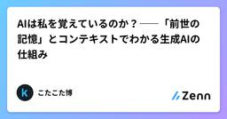
AIは私を覚えているのか？――「前世の記憶」とコンテキストでわかる生成AIの仕組み
Zennの「ChatGPT」のフィード
深夜2時、彼はPCに話しかけていた深夜2時。最近AIをバリバリ活用しはじめたITエンジニアの彼は、3日前に生成AIに投げた設計相談の続きを、また同じチャットで聞いていました。「あの、前に話した認証周りの件、覚えてますよね？あそこの仕様を少し変更したくて……」AIは即座に、3日前の議論の要点を踏まえた回答を返しました。思わず彼はつぶやきました。「お前、俺のこと覚えてるんだな……」でも、もし今日、彼が真新しいチャットを開いて同じ質問をしたら、AIは3日前の会話について一切覚えていません。まるで初対面のように、ゼロから聞き返してくるでしょう。同じAI、同じモデルです。なのに、一...
3日前
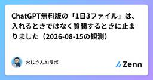
ChatGPT無料版の「1日3ファイル」は、入れるときではなく質問するときに止まりました（2026-08-15の観測）
Zennの「ChatGPT」のフィード
「ChatGPTの無料版は、1日に3ファイルのアップロードまで」。公式ヘルプにはそう書いてあります。おじさんもそのつもりで、YouTubeの撮影に臨みました。ところが、おじさんの画面では、ファイルは7件とも入りました。止まったのは、まったく別のところでした。先に断っておくと、これは「公式が間違っている」という記事ではありません。おじさんの手元で起きたことの報告です。じつは撮影した日、おじさんは「4件目で弾かれた」と思い込んでいました。あとで録画を見返したら、そうはなっていませんでした。 測った条件日付: 2026年8月15日（動画の撮影日）プラン: ChatGPT無料...
3日前
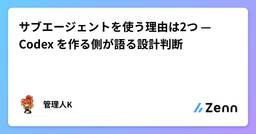
サブエージェントを使う理由は2つ — Codex を作る側が語る設計判断
Zennの「ChatGPT」のフィード
この記事について!本記事は Akshay Nathan が Latent Space に出演した回の紹介と論評です。発言の要点を筆者が抽出・整理したもので、対談の網羅でも代替でもありません。全体の文脈は必ず元動画でご確認ください。翻訳全文の掲載は行っていません。Akshay Nathan は OpenAI で ChatGPT Work と Codex のプロダクトを担当している人物です。2023年入社。元動画は1時間11分で、章立ての大半がエージェントの設計・harness・メモリ・生産性計測にあてられています。!対談形式なので、以下で引用しているのは基本的に Aksha...
4日前